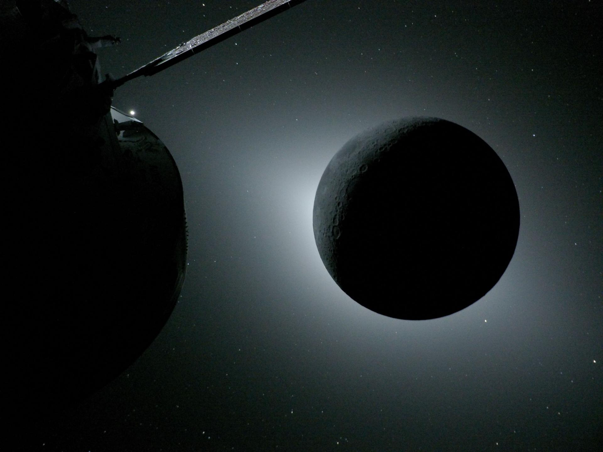

The Artemis II Mission



There has been many advancements in the recent century in regards to space exlporation, especially with the USA and Russia. Many of these were missions to explore the moon and mars, however there has not been a manned mission to the moon in a while. Artemis II is the first crewed flight to the moon since 1972, marking a new period of further scientific exploration and preparation for future endeavors in space.